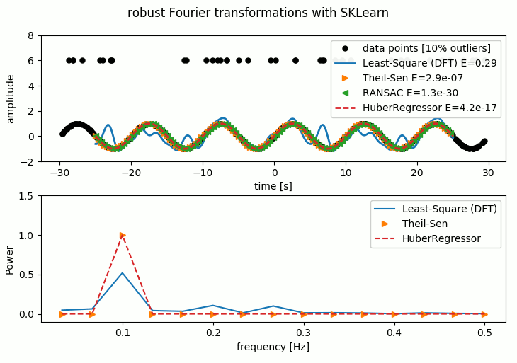
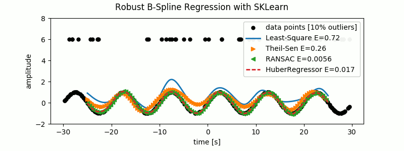
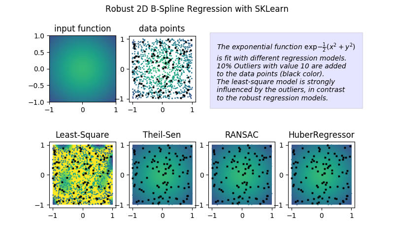

Real world data is often cluttered with outliers. Such contaminated data points can strongly distort data, and derived values such as the Fourier spectrum. Outliers can be handled by different algorithms. The python library Scikit-Learn, for example, contains several robust models that identify outliers and reduce their influence on linear data fits. Although linear models are often insufficient to capture real world data on their own, they can be combined with non-linear models, as shown in this example where the data is non-linearly transformed into polynomial space and then linearly and robustly fit.
The same idea can be applied in Fourier instead of Polynomial space: A data point with given value x (e.g. from a time series) is transformed into Fourier feature space by evaluating at point x all sine and cosine functions that constitute the Fourier basis. The result is stored in a large ‘feature’ vector. The value y at x is a linear combination of the evaluated sine and cosine functions, i.e. the dot product of a coefficient vector with the feature vector. The linear regression models can now find the coefficient vector that best predicts the data points y for given x.
Seeing the Fourier transform from this perspective has the advantage that a plethora of linear regression models can be used to fit the data and to find the coefficients of the Fourier Basis (the spectrum). The following image demonstrates how a simple sine wave with outliers can be accurately fit using the robust linear estimators that are implemented in scikit-learn. The short code can be found here.

Another useful application of custom non-linear features in Scikit-Learn are B-Splines. B-Splines are built from non-linear piecewise basis functions.. To use them in Scikit-Learn, we need to build a Custom Feature Transformer class that transforms the single feature x to the feature vector of B-Spline basis functions evaluated at x, as in the case of the Fourier transform. This Feature Transformer can be pipelined with regression models to build the robust spline regression. The results of this are shown in the following image, and the code is located here.

In a similar manner, 2D Bsplines can be used to regress images with outliers. For the next example, we want to use a 2d spline basis to a fit a Gaussian function that is sampled at random intervals. 10% of the data points are set to a value of 10 as outliers. We then run the same estimators as above to find the spline coefficients that best fit the image. Again, the robust estimators manage to fit the original input function fairly well, whereas the Least-Squares fit is strongly perturbed by the outliers. The code for this example is available here.
